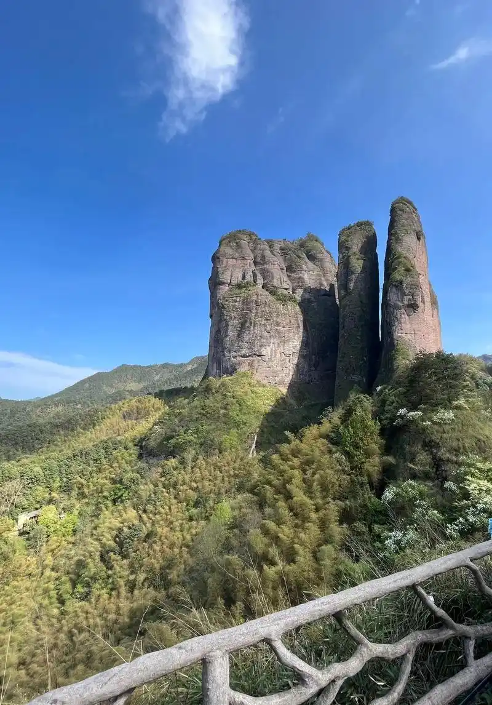
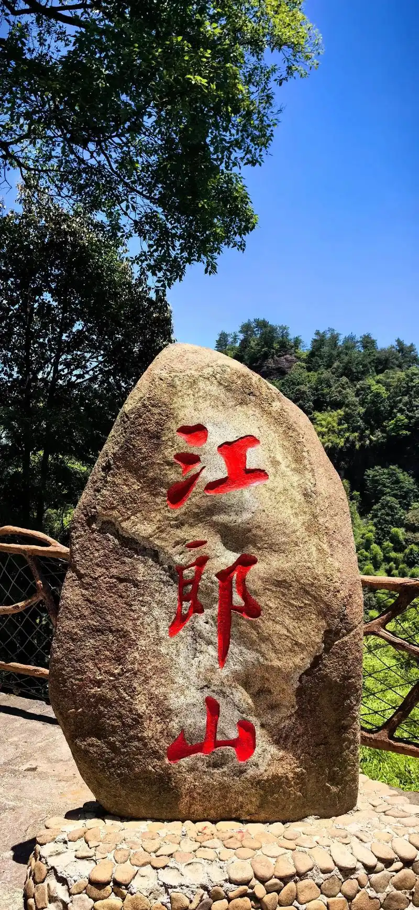
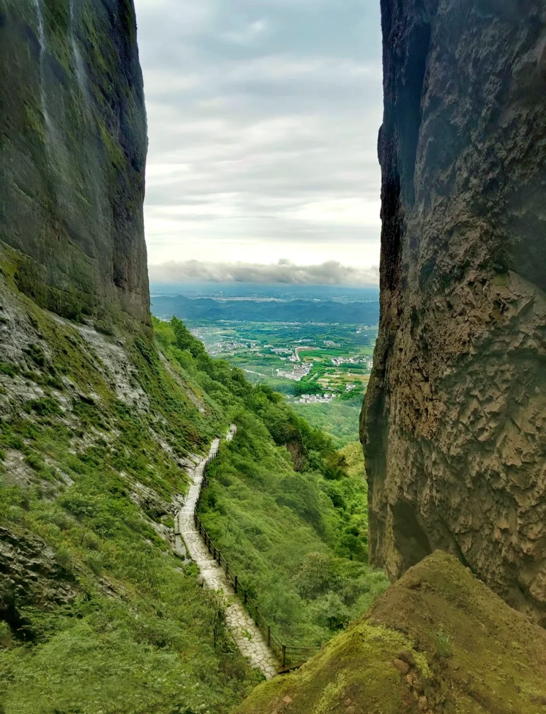

Mount Jianglang, located in Jiangshan County, Zhejiang Province, is a picturesque area known for its natural beauty, cultural heritage, and historical sites.
Nestled in the eastern part of Zhejiang Province, Mount Jianglang covers an area of approximately 20 square kilometers. The mountain experiences a subtropical monsoon climate with warm summers and cold winters.
Mount Jianglang features stunning natural landscapes including lush forests, steep cliffs, and serene streams. The most notable landmark is the "Eighteen Qu," which offers breathtaking views of the surrounding valleys.
The mountain has a rich cultural history dating back over a thousand years. It is home to several ancient temples and historical monuments that reflect the region's cultural heritage.
Visitors can enjoy various activities such as hiking, rock climbing, and bird watching. The mountain also hosts cultural events and festivals throughout the year.
Beyond Mount Jianglang, there are numerous other attractions nearby, including the Jiangshan Ancient Town and the Qingshui River Scenic Area.